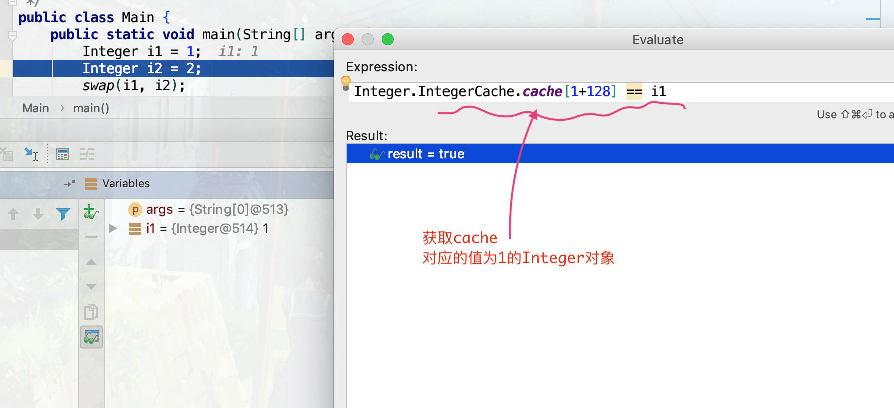
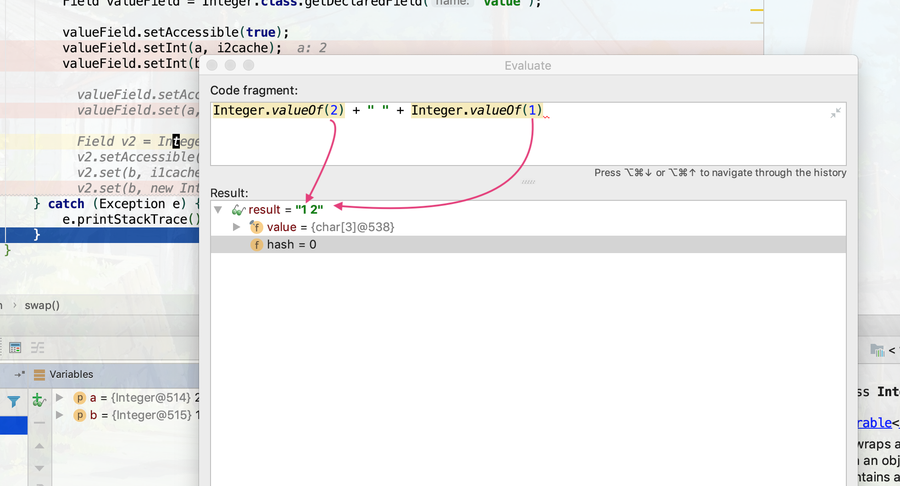
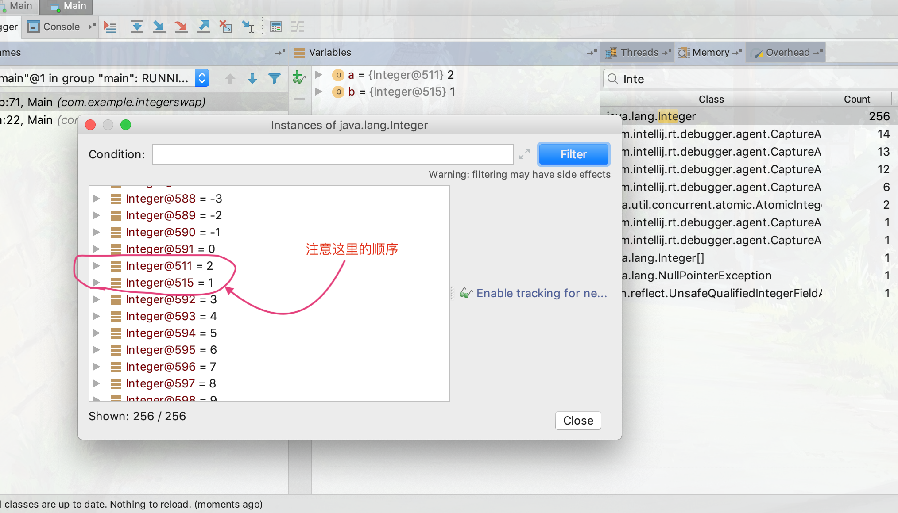
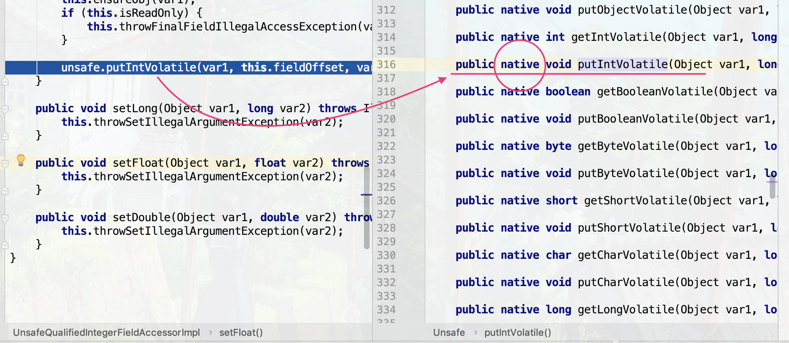
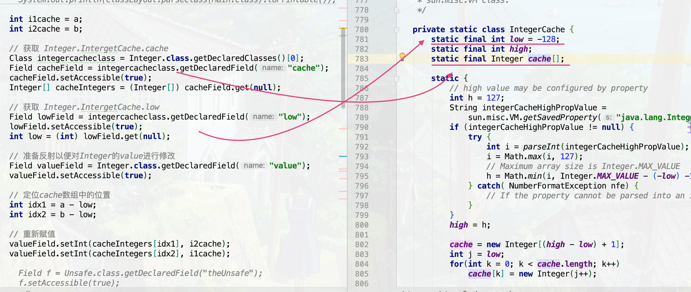

昨天晚上看到的一篇文章一道面试题考验了你对java的理解程度 里的
题目 1 2 3 4 5 6 7 8 9 10 11 12 13 14 public class Task public static void main (String[] args) Integer a = 1 ; Integer b = 2 ; System.out.printf("a = %s, b = %s\n" , a, b); swap(a, b); System.out.printf("a = %s, b = %s\n" , a, b); } public static void swap (Integer a, Integer b) } }
分析 在主函数中 #1 和 #2 处对 Integer 的赋值，是一个装箱操作，调用了 Integer.valueOf(int i) 方法，这个方法对于 -128~127 之间整形，都是返回 Integer.IntergerCache.cache 中已经创建好的 Integer 对象的引用，如下图

由于对象作为函数参数是以引用方式传递的，所以到了函数 swap(Integer a, Integer b) 中对象 a 指向的也是 Integer.IntergerCache.cache 中的那个 Integer 对象，和主函数中的那个 a 除了指向的对象地址相同外没有任何关系；b 也是同理。
而swap函数的功能是要改变主函数中两个变量指向的对象的值，那么只能改变相应堆地址上的值，也就是改变 Integer.IntergerCache.cache 中那两个 Integer 的值
解法一 使用反射，通过修改 Integer 的 value 值来间接修改 Integer.IntergerCache.cache 中的值
1 2 3 4 5 6 7 8 9 10 11 12 13 14 15 16 17 public static void swap (Integer a, Integer b) try { int i1cache = a; int i2cache = b; Field valueField = Integer.class.getDeclaredField("value" ); valueField.setAccessible(true ); valueField.setInt(a, i2cache); valueField.setInt(b, i1cache); } catch (Exception e) { e.printStackTrace(); } }
为什么说是 间接修改 ？因为这里并没有对那个数组中的数据进行修改，但是如果再执行 Integer.valueOf 时就不太对劲了

再次查看 Integer.IntergerCache.cache 的值就会发现 ‘1’ 和 ‘2’ 的位置已经换过了

到底是怎么做到的呢，那就通过调试来查看把，一路追下来，发现最终调用了一个 native 方法
Field.setInt
Field.getFieldAccessor(obj).setInt
UnsafeQualifiedIntegerFieldAccessorImpl.setInt

这个 Unsafe 是怎么回事，先插一个Flag，后面用它来实现同样的功能
解法二 直接修改 Integer.IntergerCache.cache 中的相应的值；注意，这只对 -128 ~ 127 之间的整数有效
1 2 3 4 5 6 7 8 9 10 11 12 13 14 15 16 17 18 19 20 21 22 23 24 25 26 27 28 29 30 31 32 public static void swap (Integer a, Integer b) try { int i1cache = a; int i2cache = b; Class integercacheclass = Integer.class.getDeclaredClasses()[0 ]; Field cacheField = integercacheclass.getDeclaredField("cache" ); cacheField.setAccessible(true ); Integer[] cacheIntegers = (Integer[]) cacheField.get(null ); Field lowField = integercacheclass.getDeclaredField("low" ); lowField.setAccessible(true ); int low = (int ) lowField.get(null ); Field valueField = Integer.class.getDeclaredField("value" ); valueField.setAccessible(true ); int idx1 = a - low; int idx2 = b - low; valueField.setInt(cacheIntegers[idx1], i2cache); valueField.setInt(cacheIntegers[idx2], i1cache); } catch (Exception e) { e.printStackTrace(); } }
关于获取 Integer.IntergetCache.cache 相关对象，由于它们都是static的，也就说在类加载的时候就已经全部初始化了，所以直接用 Field.get(null) 获得

解法三 拔Flag时间到：使用 Unsafe 的相关方法直接对其进行修改；这个 Unsafe 类获取对象的方法 getUnsafe 只允许特定的阶段调用，如下
1 2 3 4 5 6 7 8 9 @CallerSensitive public static Unsafe getUnsafe () Class var0 = Reflection.getCallerClass(); if (!VM.isSystemDomainLoader(var0.getClassLoader())) { throw new SecurityException("Unsafe" ); } else { return theUnsafe; } }
所以也需要通过反射获得，全部代码如下
1 2 3 4 5 6 7 8 9 10 11 12 13 14 15 16 17 18 19 public static void swap (Integer a, Integer b) try { int i1cache = a; int i2cache = b; Field f = Unsafe.class.getDeclaredField("theUnsafe" ); f.setAccessible(true ); Unsafe unsafe = (Unsafe) f.get(null ); Field valueField = Integer.class.getDeclaredField("value" ); long offset = unsafe.objectFieldOffset(valueField); unsafe.putIntVolatile(a, offset, i2cache); unsafe.putIntVolatile(b, offset, i1cache); } catch (Exception e) { e.printStackTrace(); } }
看了几个博客介绍说使用该对象还可以操纵指针，但是折腾了好长时间都没成功将这两个值改变….
总结 这道问题的本质就是：如何直接修改类型为 Integer[] 的 Integer.IntergerCache.cache 数组中 Integer 对象中的 value 值，注意：不能新建一个对象赋给它，因为这样的话假设原来的内存地址为 aa，新的变成 bb了，但是在主函数中的那个变量 a 依然指向的是地址 aa 上的值